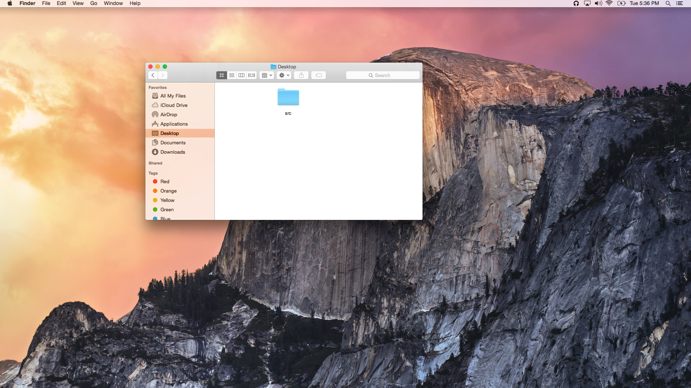
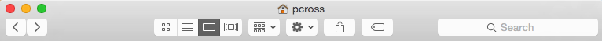
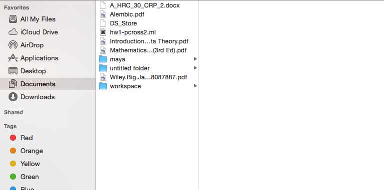
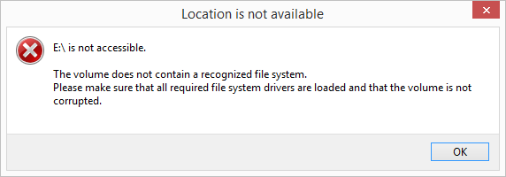

Typical Appearance
The appearance of a standard window varies across different platforms as well as some functionality. Generally windows are made up of three components: Generally windows have two components.In the frame there are buttons located on the top left corner or top right corner of the frame. There is a slight variation on the frame depending on what type of window one is accessing. (See the 'Variants' section below.) Generally in the middle of the frame, there is a title containing the location of the content one is viewing.
- Frame
 An example of the "Frame"- Content
 An example of the "Content"
The content component of the window, varies greatly and is dependent upon the type of window you are accessing. Depending on the operating system one is using the frame might envelope the content and acting in a literal sense like a frame.
Variants
There are five common variants of windows.Most of these variants's appearance vary. For more details on a specific variant check out the different OS tags below.
- File Explorer
 The file explorer window is usually accessed when one clicks a folder on their computer. There are three buttons located in the frame in the left or right corner depending on the operating system one is using.
The file explorer window is usually accessed when one clicks a folder on their computer. There are three buttons located in the frame in the left or right corner depending on the operating system one is using.- Dialog
 The dialog window usually appears the computer prompts the user for input in the form of button or string input. In the frame there will only be one or no button depepending on the operating system.
The dialog window usually appears the computer prompts the user for input in the form of button or string input. In the frame there will only be one or no button depepending on the operating system.- Alert
The alert window occurs when the computer wants to notifies the user of an action. It prompts the user for input in the form of a single button signiging that the user acknowledges the message. In its frame there will be a single or no button.- Properties
 The properties windows is usally accesed when one wants to edit the properties of a local file. The content of the window contains tabs that changes the content of the window.
The properties windows is usally accesed when one wants to edit the properties of a local file. The content of the window contains tabs that changes the content of the window.- Application
 Out of the four, categories of windows the appearance varies greatly due to the nature of 3rd party developers.
Out of the four, categories of windows the appearance varies greatly due to the nature of 3rd party developers.
Typical Behavior
Events
The three buttons in the frame exhibit three different behaviors.
- When the button to the outermost left is
clickedthe window closes.- The button in the middle hides the window. The window can be accessed again by
clickingin within the dock/menu bar.- The button on the right maximizes the window, making the window's height and width the size of the screen.
(For more info on the button component see button)